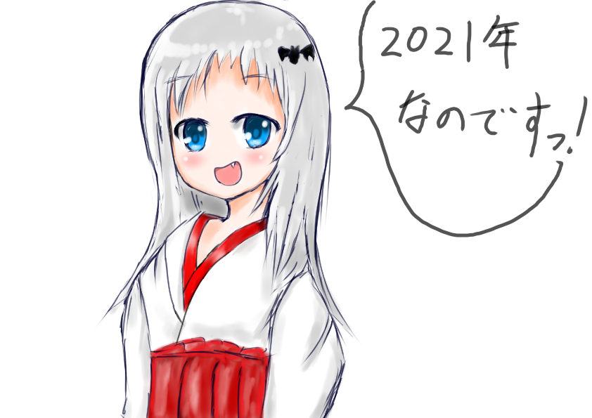

CSSとJS大して触れたことないから、00'代初頭みたいな感じのページになりそう。豪華にしていかないとね。ほどほどにKTDN要素のあるページです。
たぶんスマホ対応してます。
プロフィール：某W大SK学部4年 経済学、金融学、テキストマイニング、計量経済学など
Pythonで回帰分析の勉強しないとなあ、、、あと、動学的一般均衡モデル(DSGE)を勉強しないといけないと思っている。
好きなアニメ：ゆるキャン△、のんのんびより、
所有資格：普通自動車、普通自動二輪、英検準二級、漢検準二級、高校卒、カッパ捕獲許可
趣味：ツーリング、アニメ聖地巡礼、ギター（アコギ、エレキ）、チャリ、アニメ、ゲーム、温泉、イラスト

のんのんびよりの原作終了決定してメンタルブレイクしたものの、ゆるキャン△の2期放送間近でやや回復しました。
クドわふたーに最近はまっとる。くどちゃんマジ可愛い。